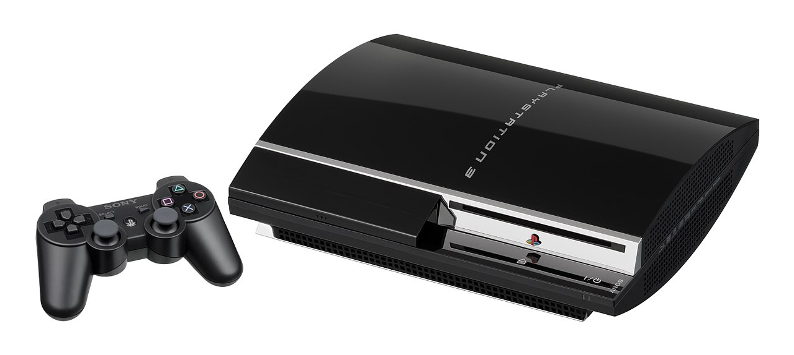
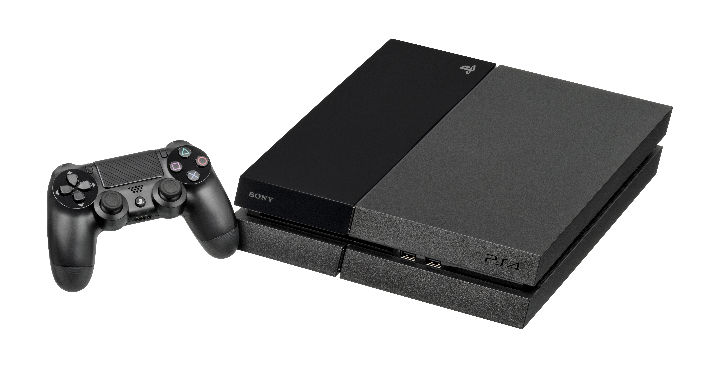

Playstation
 The Playstation was
Sony's first ever console, released on December 3, 1994. The console used optical discs instead of cartridges,
and placed emphasis on 3D gaming. The console had the ability to play audio CDs.The console's controller used
four directional buttons instead of a d-pad. The console sold 102 million units worldwide.
The Playstation was
Sony's first ever console, released on December 3, 1994. The console used optical discs instead of cartridges,
and placed emphasis on 3D gaming. The console had the ability to play audio CDs.The console's controller used
four directional buttons instead of a d-pad. The console sold 102 million units worldwide.
Playstation 2

The Playstation 2 was the successor to the Playstation, released on March 4, 2000. The console offered backwards compatibility with Playstation games and had a built-in DVD player. The console offered online gaming in 2002 with the Playstation Network Adapter, being for some first-party titles. The console is the best-selling video game console ever, selling 155 million units worldwide.
Playstation 3
The Playstation 3 was the successor to the Playstation 2, released on November 11, 2006. It was the first console to use Blu-ray Discs and the first Playstation console to use Sony's social gaming service called Playstation Network. The console supported the backwards compatibility of PS2 games. The console has sold over 80 million units worldwide.
Playstation 4
The Playstation 4 is the successor to the Playstation 3, released on November 15, 2013. The consoles places an increased emphasis on social interaction and integration with other devices and services, having the ability to stream gameplay online or to friends. The console's controller was redesigned and improved over the PS3's, with improved buttons and analog sticks and an integrated touchpad. The console supports high-dynamic-range color and virtual reality. An upgraded PS4,the Playstation Pro, was released in 2016 that supports 4K games. The console has sold 74 million units worldwide.
| Sony Franchise | Genre |
|---|---|
| God of War | Action/Adventure |
| Uncharted | Action/Adventure |
| Gran Turismo | Racing |
| Crash Bandicoot | Platform/Racing |
| Killzone | First-person Shooter |